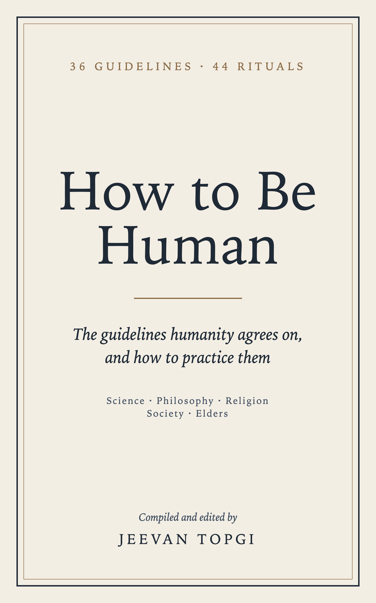

How to Be Human
The guidelines humanity agrees on, and how to practice them
Compiled and edited by Jeevan Topgi
No one is born with a manual for being human. This free book keeps only the advice that science, philosophy, the world's religions, societies across history, and people near the end of life agree on: 36 guidelines, each with its own chapter, and 44 rituals to practice them. Every factual claim is sourced.
Reading it on a Kindle
Download the EPUB, then drag it onto amazon.com/sendtokindle. It appears in your Kindle library within a few minutes. Tap any small number in the text to see its source.
The 36 guidelines
Body
- Move every day.
- Sleep enough, and keep a day of rest.
- Eat simply, drink little, and let nothing own you.
Mind
- Pay attention to the life in front of you.
- Feel your feelings; choose your actions.
- Work on what you can control; release the rest.
- Hold your beliefs, and yourself, humbly.
- Stay curious; keep learning.
Character
- Examine your life, and live by what you find.
- Tell the truth, kindly, and keep your word.
- Build the habits of the person you want to become.
- Be brave when it matters.
- Seek the middle way.
Relationships
- Put people first.
- Listen more than you speak.
- Treat love as a practice, not just a feeling.
- Care for the young; honor the old.
- Forgive, and make amends.
Society
- See the dignity in every person.
- Treat others as you would want to be treated.
- Be generous.
- Belong to a community, and show up for it.
- Welcome the stranger.
- Stand up for fairness, and use power to serve.
Work & Money
- Do useful work, and do it well.
- Know how much is enough.
- Spend less than you earn; save for lean years.
Joy
- Give thanks every day.
- Make room for play and beauty.
- Spend time in nature, protect it, and be kind to its creatures.
Hardship
- Expect suffering, and don't carry it alone.
- Grieve fully; love continues.
- When you fail, forgive yourself and begin again.
Mortality & Meaning
- Remember that you will die.
- Live for something larger than yourself.
- Make time for awe and stillness.
How this book was made
Each guideline had to be supported by at least four of five independent lenses (science, philosophy, religion, society, and the testimony of elders), contradicted by none, and taught by at least three religious traditions. Questions that failed that test, such as whether there is a God or what happens after death, are set out in their own section instead of being answered.
This book was conceived, compiled, and edited by Jeevan Topgi, who set its question, its agreement rule, and its standards of evidence. The text was drafted with AI tools (GitHub Copilot), and its claims were checked against the sources in the Notes. The wisdom itself belongs to the traditions, thinkers, and researchers it cites.
Share it freely
The book is licensed under CC BY 4.0. You can share, copy, adapt, and translate it, for any purpose, even commercially, as long as you credit Jeevan Topgi as the original source, link to the license, and say whether you made changes. That applies to changed versions too, however small the change.
Suggested credit: How to Be Human, compiled and edited by Jeevan Topgi (jtopgi.github.io/how-to-be-human), licensed under CC BY 4.0.
Quotations from other works are included for commentary and remain the property of their owners; the license doesn't cover them.
Found an error?
This book promises that everything it states as fact is sourced. If you find a mistake, please report it here (you'll need a free GitHub account). Corrections go into the next version, listed in the changelog.
This book is for general information only. It isn't medical, psychological, legal, or financial advice. If you're in crisis, call or text 988 in the US and Canada, call 116 123 (Samaritans) in the UK and Ireland, call 13 11 14 (Lifeline) in Australia, or find a line at findahelpline.com.